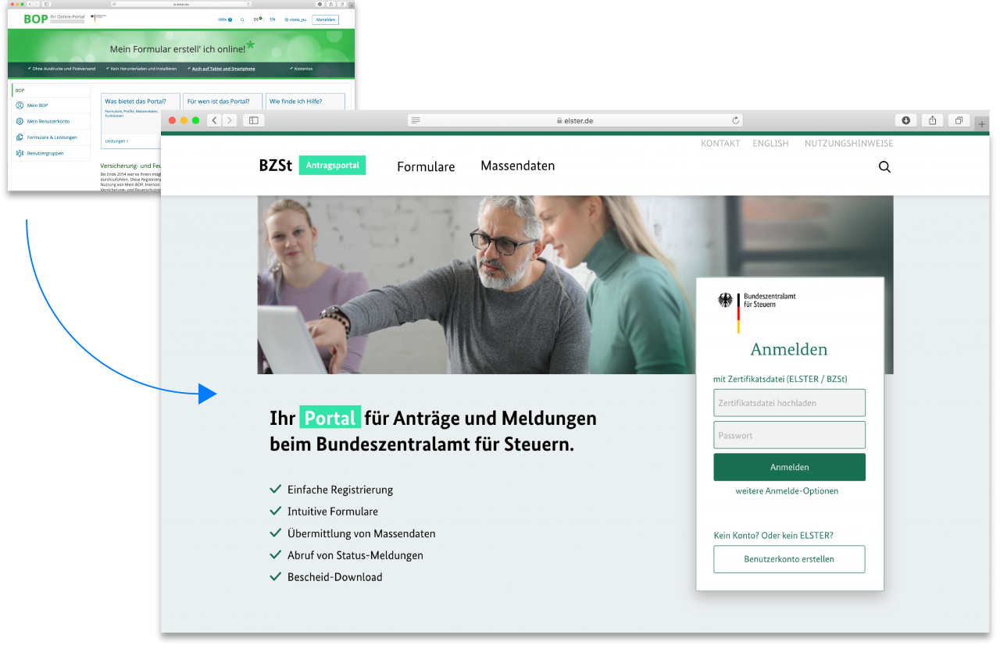
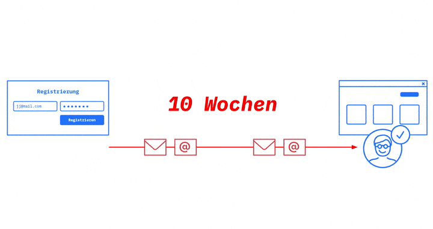
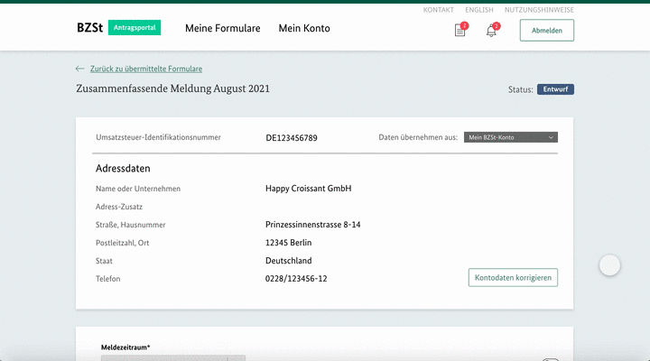

Online Antragsportal Bundeszentralamt für Steuern 2021
Digitales Antragsportal
Das Bundeszentralamt-für-Steuern-Online-Portal (BOP) ermöglicht die digitale Abgabe von Steueranträgen. Tech4Germany hatte das Ziel, das Portal einfacher zu gestalten. Mit dem entwickelten Prototypen können Nutzer:innen schneller Steuern abgeben und zurückerhalten.
Fallstudie (PDF)
Hintergrund & Herausforderung
Im BOP (BZSt-Online-Portal) gehen jährlich rund 2.300.000 steuerliche Anträge und Meldungen an das BZSt (Bundeszentralamt für Steuern) ein. Die steuerpflichtigen Personen verstehen das Portal häufig nicht und stehen vor Fragen, mit denen sie die überlastete Hotline anrufen. Diese resultieren oft aus der momentan schwer verständlichen Weboberfläche des BOPs.
Das BZSt entwickelt das BOP in einer Kooperation mit dem ITZBund jetzt komplett neu, womit sie auch den Reifegrad 4 des OZG (Onlinezugangsgesetz) erreichen wollen. Diese Entwicklungsarbeit haben wir als Tech4Germany-Team unterstützt.
Ressourcen
Fallstudie (PDF)
Empfehlungen (PDF)
Dokumentation (PDF)
Personas (PDF)
Prototypen
Vollzugang
Sofortzugang
Registrierungsprozess
BZSt-Projektdokumentation

Zielsetzung & Vorgehen
Ziel ist es, Nutzer:innen den Umgang mit dem BOP zu vereinfachen. Diese sollen, ohne die überlastete Hotline anzurufen, Anträge und Meldungen einreichen und einsehen sowie Einspruch erheben können.
Um die Probleme der aktuellen Nutzer:innen des BOPs zu verstehen, haben wir Nutzer:innen aus dem In- und Ausland mit und ohne steuerliche Fachkenntnisse interviewt. Die Ergebnisse haben wir in vier Personas zusammengefasst. Außerdem haben wir die Interviews mit Gesprächen aus den Fachbereichen des BZSt sowie BOP-Tests mit anderen Tech4Germany-Fellows ergänzt.
Aufbauend auf dieser Nutzer:innenforschung haben wir Lösungsansätze konzipiert, prototypisch umgesetzt, getestet und weiter auf die Bedürfnisse zugeschnitten.
Erkenntnisse & Lösung
Aus Interviews wissen wir, dass Nutzer:innen das BOP nicht an allen Stellen intuitiv finden. Konkret haben wir diese Hauptprobleme identifiziert:
Die Registrierung ist unnötig kompliziert.
Die Informationsarchitektur des Portals ist überkomplex.
Die Formulare sind kompliziert und schwer verständlich.
Die Verarbeitung von Anträgen und Meldungen ist intransparent.
Uns wurde klar, dass wir zur Lösung dieser Probleme einen Prototypen für eine intuitive Weboberfläche benötigen.
Einfache Registrierung und Sofort-Zugang
Die Nutzer:innengruppen werden durch zwei einfache Fragen zu Beginn der Registrierung eingruppiert und erhalten einen Vorschlag für die geeignete Identifizierungsmethode.
Bisher mussten in manchen Fällen Nutzer:innen bis zu zehn Wochen auf die Identifizierung warten und konnten nicht ins Portal. Der Zugang wird ihnen jetzt sofort ermöglicht. Dort können sie bereits Formulare ausfüllen, während das BZSt den Identifizierungsprozess im Hintergrund bearbeitet.
Außerdem entfallen sogar zwei Identifizierungsschritte, sodass der Zugang noch schneller auf den vollen Funktionsumfang freigeschaltet wird.

Schlanke Informationsarchitektur
Man kommt mit einem intuitiveren Aufbau und weniger Klicks zum Ziel.
Zu Beginn des Registrierungsprozesses wählt man seine Nutzer:innengruppe aus und erhält entsprechend zugeschnittene Portalinhalte.
Vereinfachte Formulare
Die Übertragung der Formulare von Papier ins Digitale eröffnet neue Möglichkeiten. Es sind nur noch die relevanten Abschnitte sichtbar. Wiederkehrender Informationen kann man automatisiert befüllen. Die Texte sind ebenfalls einfacher und wesentlich kürzer. Für juristische Begriffe gibt es zudem hilfreiche Tooltips.

Transparenter Antragsverlauf
Die Kommunikation mit dem BZSt ist nach Vorgang gebündelt, sodass für jeden Vorgang der Status einfach nachvollziehbar ist. Damit sind auch die nächsten Schritte leichter erkennbar.
Zusätzlich schaffen detaillierte Statusmeldungen mehr Transparenz über den Bearbeitungsstand.

Unsere Ergebnisse sind frei verfügbar
Dokumentation
Detailliertes Vorgehen und Ergebnisse
Download
Prototyp
Clickdummy für den Vollzugang
Ausprobieren
Prototyp
Clickdummy für den Sofortzugang
Ausprobieren
Prototyp
BOP Redesign für den Registrierungsprozess
Ausprobieren
das Team
Birte Dreier \ Product Fellow \ LinkedIn
Dirk Heider \ Design Fellow \ LinkedIn
 Jonathan Janetzki \
Engineering Fellow \
GitHub
Jonathan Janetzki \
Engineering Fellow \
GitHub
Vlada Pugavko \ Design Fellow \ LinkedIn
Projektpartner:INNEN
Bundeszentralamt für Steuern
David \ Digitallotse
Markus \ Digitallotse
Tanja \ Digitallotsin
Thomas \ Digitallotse